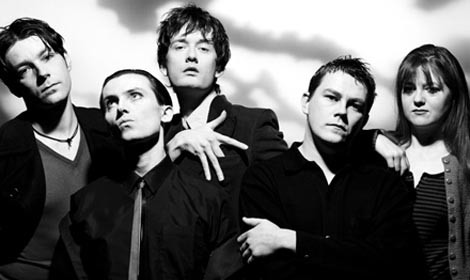
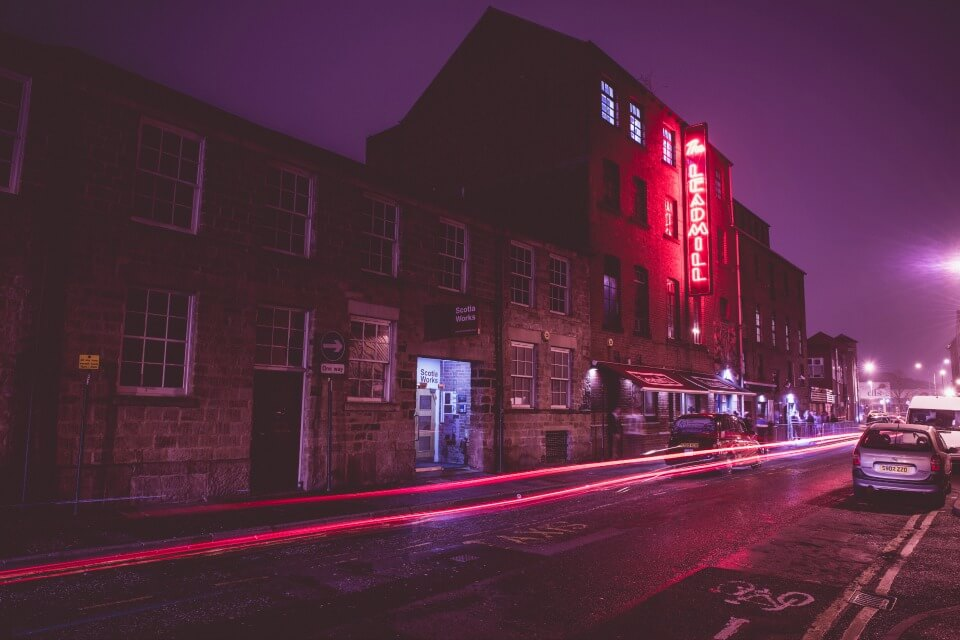
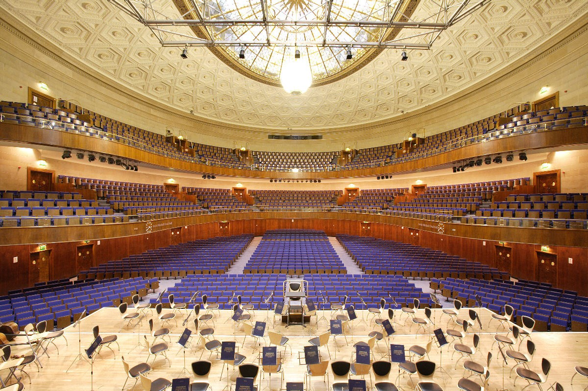

Sheffield
The City of Music
Hidden brand
Home
(current)
Link
Disabled
Search
As the birthplace of the the Arctic Monkeys, Pulp, Def Leppard, Bring Me The Horizon and The Human League Sheffield has a thriving local music scene making it one of the UKs leading music cities!
bands
Arctic Monkeys
Pulp

Def Leppard
Bring Me The Horizon
The Human League
In addition to the local artists and bands Sheffield boasts a host of venues such as...
venues
The Sheffield arena
Plug
Leadmill

City Hall

Yellow Arch Studios
Hope Works
02 Acadamy
insert contact info and links
For more information visit
skiddle